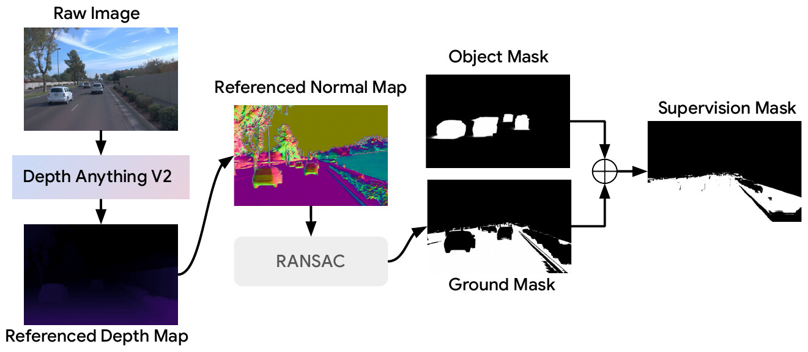
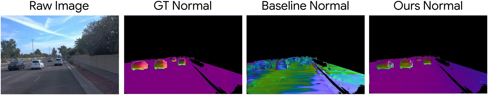
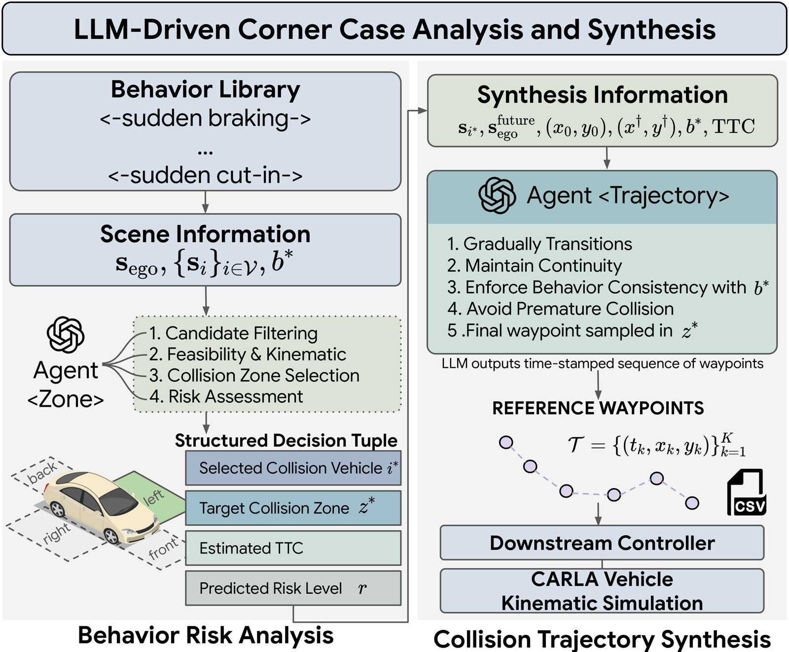
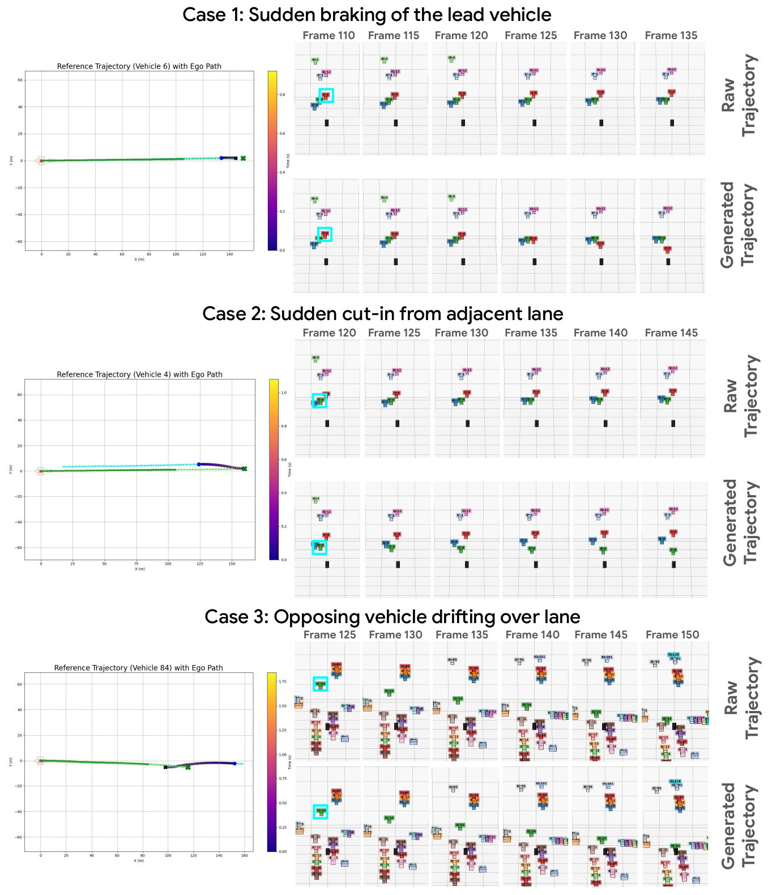
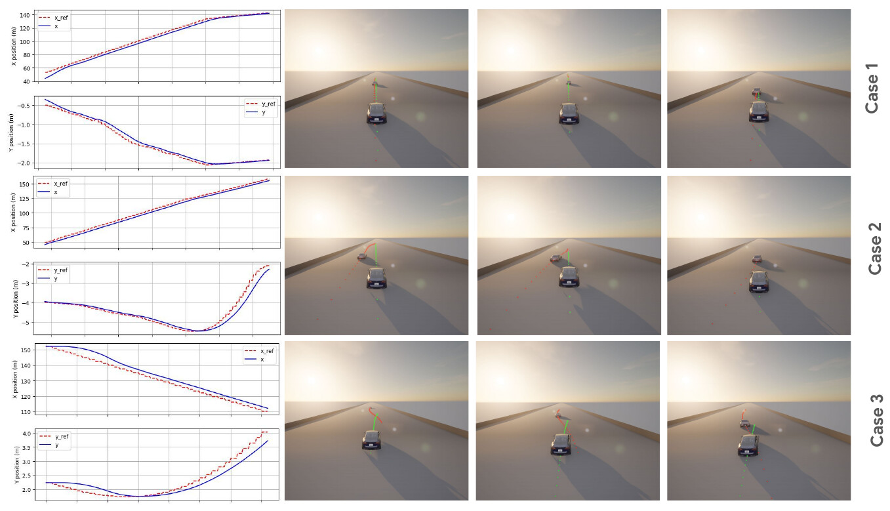

Abstract
Safety evaluation for autonomous driving is dominated by rare, safety-critical interactions, motivating simulators that can deliberately synthesize corner cases with photorealistic observations. Corner-case generation is inherently a multi-source problem spanning visual representation, scene reasoning, and vehicle trajectory generation and control. Prior knowledge- and model-based approaches typically focus on scene or trajectory components in isolation, while diffusion-based methods attempt end-to-end generation but still struggle to ensure spatiotemporal consistency and physical realism.
We propose CARLA-GS, a modular corner-case synthesis pipeline that decouples visual representation, semantic reasoning, and physics-based execution while maintaining tight cross-module coupling. Starting from real driving data, we reconstruct an editable Gaussian scene with additional geometry-consistent constraints. A multi-agent LLM then performs scene-level reasoning to identify risky interactions and generate intent-level waypoint trajectories, while low-level motion control is delegated to CARLA, where a PID controller ensures kinematic and dynamic feasibility. The simulated vehicle states are finally re-projected into the Gaussian scene for ego-centric rendering. Experiments on the Waymo Open Dataset show that our framework enables controllable corner-case generation and produces photorealistic, spatiotemporally consistent videos aligned with semantic intent and physically feasible motion.
(TTC < 1 s)
time-to-collision
after CARLA execution
geometry constraints
Method
Each module does what it is good at. Gaussians handle appearance, the LLM handles intent, CARLA handles physics.
-
01 · Represent
Geometry-consistent 3DGS
Street Gaussians with separate vehicle actors, plus flattening, normal and geometry losses for stable road and vehicle surfaces.
-
02 · Reason
Multi-agent LLM
Agent<Zone>picks the adversarial vehicle, collision zone, TTC and risk level.Agent<Trajectory>writes time-stamped waypoints. -
03 · Execute & Render
CARLA → Gaussians
A PID controller tracks the waypoints in CARLA. Simulated poses are re-projected into the Gaussian scene and rendered from the ego cameras.
01Geometry-Consistent Reconstruction
Onboard cameras see each surface from only a few poses, so vanilla 3DGS produces bumpy geometry. We add three regularizers on top of the Street Gaussians loss: flattening (thin, disk-like Gaussians), normal (match reference normals) and geometry (smooth, consistent surfaces), all applied inside a supervision mask built from object masks and a RANSAC ground plane:


| Components | PSNR ↑ | SSIM ↑ | LPIPS ↓ | Normal L1 ↓ | Normal Cos ↓ |
|---|---|---|---|---|---|
| Baseline (Street Gaussians) | 29.703 | 0.907 | 0.219 | 0.682 | 0.984 |
| + ℒflat | 29.828 | 0.908 | 0.215 | 0.677 | 0.957 |
| + ℒflat + ℒnormal | 29.521 | 0.906 | 0.217 | 0.361 | 0.482 |
| + ℒflat + ℒnormal + ℒgeo | 29.027 | 0.900 | 0.223 | 0.350 | 0.480 |
02LLM-Driven Corner-Case Reasoning
Four collision zones {front, back, left, right} are defined around the ego vehicle.
Given a behavior from the library (or inferred by the LLM) and the tracked states of all vehicles, two chained agents decide
who moves and where it goes. The LLM outputs only waypoints; it never outputs control signals.

# Case 1 · frame 60 behavior : sudden braking of lead vehicle vehicle : 6 zone : front risk : Critical TTC : 1.0 s # Case 2 · frame 60 behavior : sudden cut-in from adjacent lane vehicle : 4 zone : front risk : High TTC : 1.2 s # Case 3 · frame 115 behavior : opposing vehicle drifting over lane vehicle : 84 zone : front risk : Critical TTC : 1.99 s

03Physics Execution in CARLA
Waypoints are imported into CARLA 0.9.16 as a reference path and tracked by VehiclePIDController. CARLA's vehicle model turns intent into a
kinematically feasible trajectory, which is then written back to the Gaussian actor pose frame by frame.
Near-field vehicles that were only partly observed are swapped for aligned SAM 3D assets to avoid tearing under new viewpoints.

04Synthesized Corner Cases
Three-camera views on Waymo. Top: the original log. Bottom: the corner case synthesized by CARLA-GS, playing in sync.
05Quantitative Results
85 corner-case scenarios from 8 Waymo sequences. All methods share initial conditions and horizons. Mean ± std.
| Method | Zone Hit ↑ | Success ↑ | MinTTC (s) ↓ |
|---|---|---|---|
| Rule-based | 0.138 ± 0.347 | 0.613 ± 0.490 | 1.483 ± 1.794 |
| Random | 0.063 ± 0.244 | 0.738 ± 0.443 | 1.095 ± 1.560 |
| Ours (multi-agent LLM) | 0.438 ± 0.499 | 0.925 ± 0.265 | 0.472 ± 1.215 |
| Method | |alat|95 (m/s²) ↓ | |κ̇|95 (1/(m·s)) ↓ | ComfortViol (%) ↓ |
|---|---|---|---|
| LLM-only | 2.66 ± 5.17 | 1.02 ± 4.05 | 9.62 ± 19.15 |
| Ours (LLM + CARLA) | 2.02 ± 3.35 | 0.43 ± 0.97 | 9.39 ± 21.45 |